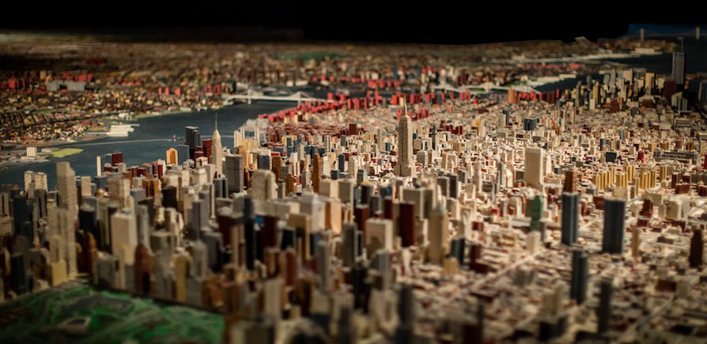

THE QUEENS MUSEUM of ART
The Panorama of the City of New York

The Panorama of the City of New York is the jewel in the crown of the collection of the Queens Museum of Art and a locus of memory for visitors from all over the globe. Conceived as a celebration of the City's municipal infrastructure by urban mastermind and World's Fair President Robert Moses for the 1964 Fair, the Panorama was built by a team of more than 100 people working for the great architectural model makers Raymond Lester & Associates over the course of three years.
Lester was familiar with building larger-than-life model environments, having worked with Norman Bel Geddes as an artist, designer fabricator for the 1939/40 New York World's Fair, and later, on other large scale models of civic projects for Moses. In planning the model, Lester referred to aerial photographs, Sanborn fire insurance maps, and a range of other City material as the Panorama had to be accurate, with the initial contract demanding less than one percent margin of error between reality and the world's largest scale model. Comprising an area of 9,335 square feet and built to a scale of 1:1200 where one inch equals 100 feet, the Panorama is a metropolis in miniature. Each of the city's 895,000 buildings constructed prior to 1992 and every street, park and bridges are represented and assembled onto 273 individual sections comprising the 320 square miles of New York City. In this miraculously scaled cityscape, the borough of Manhattan measures a seemingly vast 70 x 15 feet and the Empire State Building is a towering 15 inches tall while the Statue of Liberty is only 1-7/8 inches in height.
Long Island and New Jersey peek onto the model as black shadowy masses to the east and west.
When introduced in 1964, the Panorama's special features included a continuous lighting cycle that went from dawn to dusk to night. In addition, an automated program of 3,172 colored lights highlighted the City's municipal buildings, police precincts, firehouses, schools, hospitals, courthouses, libraries, public housing projects, as well as water, gas and electric stations. Black light fixtures mounted a few feet above the surface of the model illuminated trees and grounds of the city's parks and the windows of Manhattan's skyscrapers, all painted with phosphorescent paints that glowed green in the night cycle. Other special effects in the Panorama included moving airplanes that took off and landed at LaGuardia Airport every few minutes.
The New New Yorkers
In partnership with the Queens Library, the Queens Museum's New New Yorkers program offers free multilingual classes to meet the needs of adult immigrant communities in Queens.Broadening horizons and teaching valuable life skills through the arts, New New Yorkers offers adult immigrants the opportunity to interact closely with accomplished professional artists and engage with their innovative work. The program provides opportunities for personal creative expression through rigorous art courses, exhibitions and participation in cultural festivals. It also supports student-led initiatives at the Queens Museum.
Courses emphasize the arts, technology and English language acquisition, provided at no cost, in a variety of languages. While offerings are most often in Spanish, Mandarin and Korean, past workshops have included Arabic, Bengali, Croatian, Hindi, Nepali, Persian, Portuguese and Tibetan, with more to come.Subjects have included: Painting, Book making, Crafts, Photography, Video editing, Performance, Graphic design, Web design, Computer literacy, Arts literacy, English for speakers of other languages.


Photographs of the "Panorama Exhibit" and Smartphone APP classes at Corona Library, this time in The Queens Museum of Arts.